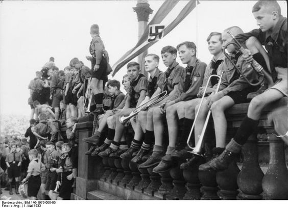
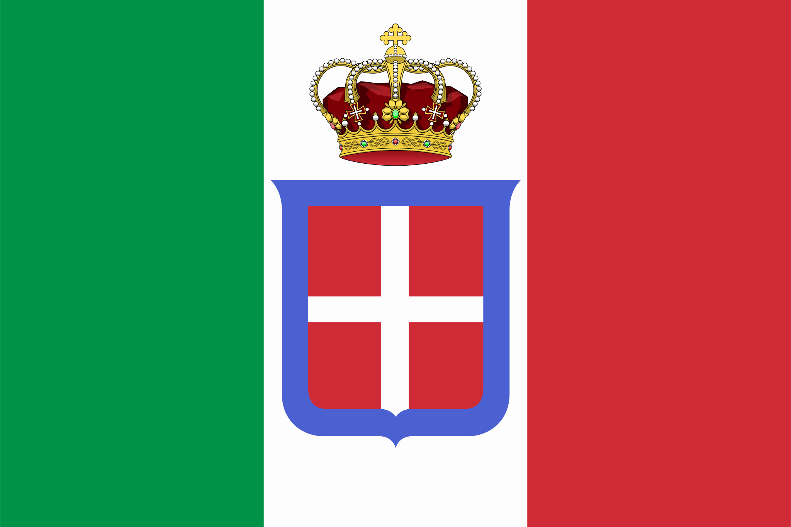
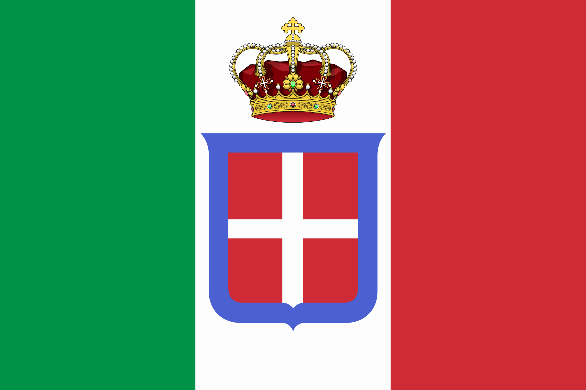

Alemania Nazi en la Segunda Guerra Mundial: Ascenso, Dominio y Consecuencias
La participación de la Alemania Nazi en la Segunda Guerra Mundial fue un acontecimiento trascendental que marcó la historia del siglo XX. Desde su ascenso al poder en la década de 1930 hasta su derrota final en 1945, el régimen nazi liderado por Adolf Hitler desencadenó una serie de eventos que tuvieron consecuencias catastróficas para el mundo. En este ensayo, exploraremos en profundidad la participación de la Alemania Nazi en la Segunda Guerra Mundial, desde sus orígenes hasta sus impactos a largo plazo.
Histórico: El Ascenso del Nazismo en Alemania
Para entender plenamente la participación de la Alemania Nazi en la Segunda Guerra Mundial, es esencial examinar el contexto histórico que llevó al ascenso del nazismo en Alemania. Después de la Primera Guerra Mundial, Alemania se encontraba en una situación de crisis económica, política y social, marcada por la humillación de la derrota en la guerra y las duras condiciones impuestas por el Tratado de Versalles.
En este clima de descontento y desesperación, el Partido Nazi, liderado por Adolf Hitler, emergió como una fuerza política poderosa, prometiendo restaurar la grandeza de Alemania y purgarla de sus supuestos enemigos, incluidos los judíos, los comunistas y otros grupos considerados "indeseables" por el régimen nazi.
La Política de Expansionismo y Revancha
Desde el principio, el régimen nazi de Hitler tuvo como objetivo principal expandir el territorio y la influencia de Alemania en Europa y más allá. En un primer momento, esta expansión se llevó a cabo mediante medios diplomáticos y políticos, como la remilitarización de Renania en 1936 y la anexión de Austria en 1938 (Anschluss).
Sin embargo, el expansionismo nazi pronto se volvió más agresivo y violento, culminando en la invasión de Polonia en septiembre de 1939, que marcó el inicio de la Segunda Guerra Mundial en Europa. La rápida conquista de Polonia por parte de Alemania demostró la efectividad de la Blitzkrieg (guerra relámpago), una táctica militar que combinaba ataques aéreos, terrestres y acuáticos para lograr la superioridad táctica y estratégica.
La Conquista de Europa y la Amenaza del Eje
Tras la conquista de Polonia, la Alemania Nazi se embarcó en una serie de campañas militares que llevaron a la conquista de gran parte de Europa occidental, incluyendo Francia, los Países Bajos, Bélgica, y los países nórdicos. La rápida sucesión de victorias alemanas llevó a la formación del Eje, una alianza militar entre Alemania, Italia y Japón, que buscaba dominar el mundo y establecer un nuevo orden internacional bajo el liderazgo de los regímenes totalitarios.
La amenaza del Eje representaba una seria preocupación para las potencias aliadas, especialmente el Reino Unido y la Unión Soviética, que se enfrentaron a la perspectiva de una invasión alemana en Europa occidental y oriental. La batalla por el control de Europa se intensificó, con combates feroces en el frente oriental entre las fuerzas alemanas y soviéticas, y en el frente occidental entre las fuerzas alemanas y aliadas.
Política de Exterminio y el Holocausto
Una de las características más espantosas del régimen nazi fue su política de exterminio sistemático de los judíos europeos, conocida como el Holocausto. Desde el ascenso al poder de Hitler en 1933, los judíos fueron objeto de discriminación, persecución y violencia por parte del régimen nazi, que promovía la idea de una "raza maestra" aria y consideraba a los judíos como una amenaza para la pureza racial de Alemania.
El Holocausto alcanzó su punto máximo durante la Segunda Guerra Mundial, con la implementación de la "Solución Final", un plan para
exterminar a los judíos europeos en campos de concentración y exterminio en toda Europa ocupada por los nazis. Se estima que seis millones de judíos fueron asesinados durante el Holocausto, junto con millones de otras víctimas, incluidos gitanos, discapacitados, homosexuales y disidentes políticos.
La Resistencia y la Oposición Interna
A pesar del control totalitario del régimen nazi, hubo actos de resistencia y oposición interna en Alemania y en toda Europa ocupada por los nazis. La resistencia tomó muchas formas, desde la distribución de panfletos y propaganda clandestina hasta la organización de redes de rescate y la participación en actos de sabotaje y desobediencia civil.
La resistencia más notable contra el régimen nazi ocurrió en el interior de Alemania, donde grupos como la Rosa Blanca y la Orquesta Roja desafiaron abiertamente al régimen y promovieron la resistencia no violenta y la desobediencia civil. Estos grupos arriesgaron sus vidas para oponerse al régimen nazi y defender los principios de libertad, justicia y dignidad humana.
La Derrota y la Caída del Régimen Nazi
La derrota final de la Alemania Nazi llegó en mayo de 1945, cuando las fuerzas aliadas capturaron Berlín y obligaron a la rendición incondicional del régimen nazi. La muerte de Hitler y la toma de sucesivos líderes nazis llevó al colapso total del régimen, que dejó a Alemania devastada por la guerra y dividida entre las potencias aliadas y la Unión Soviética.
La caída del régimen nazi marcó el fin de una era oscura en la historia de Alemania y del mundo, pero dejó un legado duradero de devastación y tragedia. La Segunda Guerra Mundial dejó un saldo de millones de muertos, heridos y desplazados, y devastó gran parte de Europa y Asia con sus combates y destrucción.
El Legado y las Lecciones de la Segunda Guerra Mundial
La Segunda Guerra Mundial y la participación de la Alemania Nazi en ella dejaron un legado duradero en la historia del siglo XX y en la memoria colectiva del mundo. La guerra demostró las consecuencias catastróficas del totalitarismo y la intolerancia, y subrayó la importancia de la resistencia y la solidaridad en la lucha por la libertad y la justicia.
El Holocausto, en particular, sigue siendo un recordatorio sombrío de las profundidades de la depravación humana y la necesidad de defender los derechos humanos y la dignidad en todo momento. La memoria del Holocausto también sirve como un recordatorio de la importancia de la educación y la conciencia pública en la prevención de futuras atrocidades y genocidios.
Conclusiones
La participación de la Alemania Nazi en la Segunda Guerra Mundial fue un acontecimiento trascendental que dejó una marca indeleble en la historia del siglo XX. Desde su ascenso al poder hasta su caída final, el régimen nazi liderado por Adolf Hitler desencadenó una serie de eventos que tuvieron consecuencias catastróficas para el mundo.
La Segunda Guerra Mundial y la participación de la Alemania Nazi en ella fueron un recordatorio sombrío de las profundidades de la depravación humana y la necesidad de defender los valores de la libertad, la justicia y la dignidad humana en todo momento. A través del estudio y la reflexión sobre este período oscuro de la historia, podemos honrar el sacrificio y el heroísmo de aquellos que lucharon y murieron por la libertad y la justicia en todo el mundo.

 
